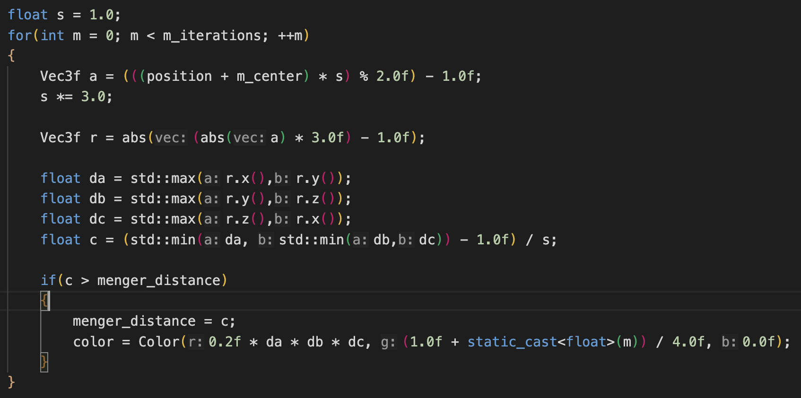
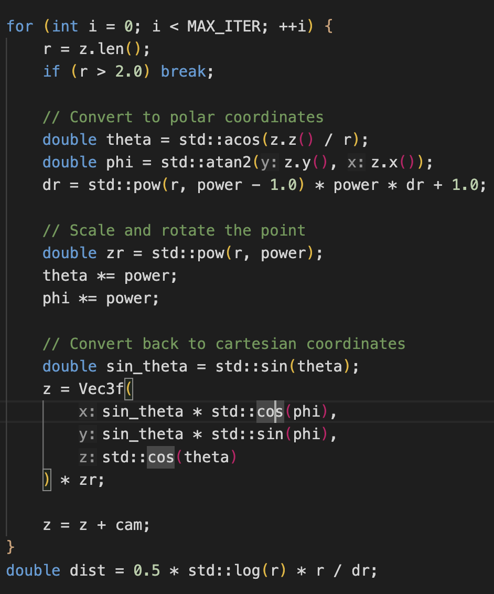
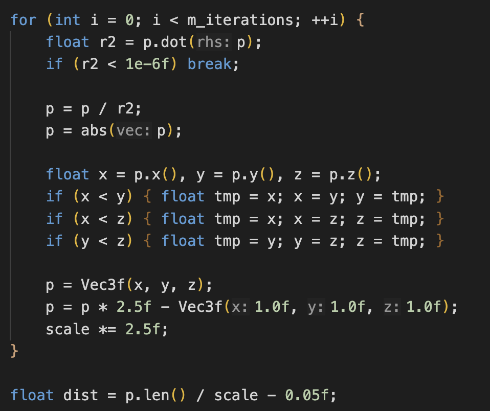
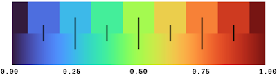

Magical Fractals! Final
Link to webpage: sophie200.github.io/184-proj-prop/pages/final.html
Abstract
Our project showcases magical 3D fractals inspired by the visual styles of Arcane and Into the Spiderverse. We render three types of fractals: the Menger sponge, the Mandelbulb, and a custom creation we call the Anomaly — a 3D fractal based on Apollonian sphere packing and Arcane's own Anomoly
{kind=link}
{kind=link}
{kind=link}
{kind=link}
We use ray marching to generate these fractals, an efficient variant of ray tracing well-suited for procedural geometry. The shapes of our fractals are modeled using Signed Distance Functions (SDFs) — mathematical functions that return the distance from any point in space to the surface of a shape. In our case, these surfaces define the complex geometries of our fractals.
Starting with a basic raymarcher, we extended the renderer to support our own fractals by designing custom SDFs and scene objects. We also implemented configurable parameters, allowing users to customize the fractals with:
- Choice of color mapping (e.g., red-blue or turbo)
- Adjustable power for the Mandelbulb
- Dynamic camera controls that let viewers zoom inward and outward through the fractal space
The result is a collection of visually striking, animated-like 3D fractals that blend mathematical elegance with artistic imagination.
Technical Approach
Raymarcher
In order to render 3D fractals, we need to have a raymarcher that takes in a distance-estimating function (SDF) of the scene we want to render and generate the scene accordingly. Luckily, we found a fully-functional C++ implementation by Balajanovski. The Repo includes the SDF of multiple simple artifacts like boxes, spheres, planes, and one 3D fractal called Menger. It has the functionality to read from a yaml file specifying the camera position and artifacts and render with Blinn-Phong shading. We extended the functionality by allowing multiple renders back-to-back, altering the camera position in each render so we can see the 3D fractals from different positions. We added support for different fractal types: Mandelbulb and our custom fractal Anomaly (inspired by Apollonian sphere packing). We also added support for 2 types of color schemes: Red Blue and Turbo.
To have the raymarcher show scenes from different positions, we had the camera position's z-coordinate follow a sine wave (alternating between moving forward and backward), as shown in our code below. In each iteration, the ray marcher calculates a new camera position based on the current t value, generates a frame based on the camera position and shows it (either on the screen or to a file based on our renderer mode). The choice of using a sine wave is due to the need to put together a demo video that can be played on a loop. We also considered using fancier functions like back-to-back cubic Bezier curves (much like CSS cubic-bezier animations), but we wanted to focus on actual fractal generations and decided that a sine curve is functionally what we want.

|
Menger
The Menger sponge is a fractal constructed by repeatedly removing the central third of a cube along all three axes from the remaining pieces. The SDF for a Menger sponge is calculated by mimicking this iterative removal process.
For a given point in 3D space, the SDF algorithm iteratively transforms the point's coordinates to effectively zoom into the corresponding location within the fractal at increasing levels of detail. In each iteration, the point's coordinates are scaled and mapped back to a normalized range [-1, 1]. This transformed point is then analyzed to determine if it falls within one of the regions that are being removed at that iteration.
To reiterate what we said in the Raymarcher section, the menger code already existed in the simple-raymarcher repo.
With our added color scheme (described below) and camera viewing (describe above), we get a really cool and engaging 3D Menger Sponge (shown below as well).|
 |
Mandelbulb
The Mandelbulb is a 3D fractal defined by iterating a non-linear function on points in 3D space and observing their behavior. Its SDF is calculated using an escape-time algorithm, tracking how a point transforms over repeated applications of this function.
For a given point in 3D space, the SDF algorithm iteratively applies the Mandelbulb function. This function involves converting the point to spherical coordinates, increasing the magnitude and multiplying the angles by a specific power, converting the point back to Cartesian coordinates, and finally adding the original test point.
The algorithm repeats this transformation for a number of iterations or until the magnitude of the point exceeds the escape threshold of 2, at which point it is considered to be outside the Mandelbulb set.
Our algorithm references the Java code.
|
 |
Anomaly (inspired by Apollonian sphere packing)
The Anomaly is a 3D fractal inspired by Apollonian sphere packing, which uses sphere inversion, absolute value reflection, and scaling to continuously pack spheres into an outermost sphere. At each iteration, the point is inverted through a unit sphere, mirrored into the positive octant, and sorted so its coordinates are in descending order. The point is then scaled and shifted, amplifying the fractal detail at each step. This process is repeated for a fixed number of iterations or until the point nears the fractal’s singularity (too close to the origin, since that leads to numerical instability and division by zero). The result is a surreal, symmetric structure with infinite self-similarity and sharp edges - just like the Anomaly scene in Arcane!
We experimented with different number of iterations and found out that 6 is the sweet spot that produces the most visually impressive effect.
|
 |
Color
We implemented two color schemes for our fractals. Both color schemes map colors based on the distance of the fractal to the camera. One of our color schemes maps the distance to a colormap of red and blue colors, which results in different shades of purple. Our other scheme is inspired by Google's Turbo color mapping, where we use Google's provided color map to assign color based on distance. The turbo scheme results in colors from the entire rainbow spectrum (purple).|
 |
Problems we faced
One of the main problems we faced was with our camera position and its positioning in the raymarcher. At first our camera position was moving to the right so when viewing our fractals our camera would go "off-screen" and we wouldn't be able to see the fractal anymore. To solve this, we made our camera have a fixed position relative to the x-axis and then changed our camera position relative to the z-axis (as mentioned above in the raymarcher section). Since we are producing fractals this change also lensed itself to really cool exploration of these fractals visually.